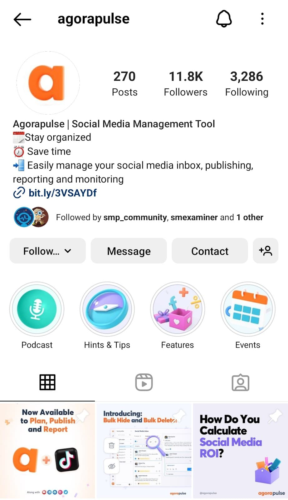

Instagram management can include content creation, posting schedules, influencer outreach, and display advertising. Account management can include building a community, promoting products and services, and converting followers into loyal customers.
You can also make your Instagram account private:
You can also make your Instagram profile professional:
|
 |